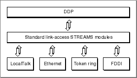

About DDP
The protocol implementations at the physical and data-link layers of the AppleTalk protocol stack provide node-to-node delivery of data on an AppleTalk internet. DDP is a client of the link-access STREAMS modules, and it extends the node-to-node delivery service provided at the data-link layer by delivering data to a specific socket on a node. A socket number specifies a logical entity on a node and forms part of an AppleTalk endpoint address.DDP is central to the process of sending and receiving data from endpoint to endpoint across an AppleTalk internet. Regardless of which data link is being used and which (if any) higher-level protocols are providing additional processing, all AppleTalk data is carried in the form of DDP packets, datagrams. A packet consists of a header followed by data. DDP delivers data from one endpoint to another by forming the packet header, which contains the destination address, and by passing the packet to the appropriate data link.
Figure 15-1 shows how the DDP endpoint provider encompasses its underlying link-access STREAMS modules and its physical ports. For packets obtained from the data-link layer, DDP provides a best-effort delivery service.
Figure 15-1 The DDP endpoint provider's underlying delivery mechanism
